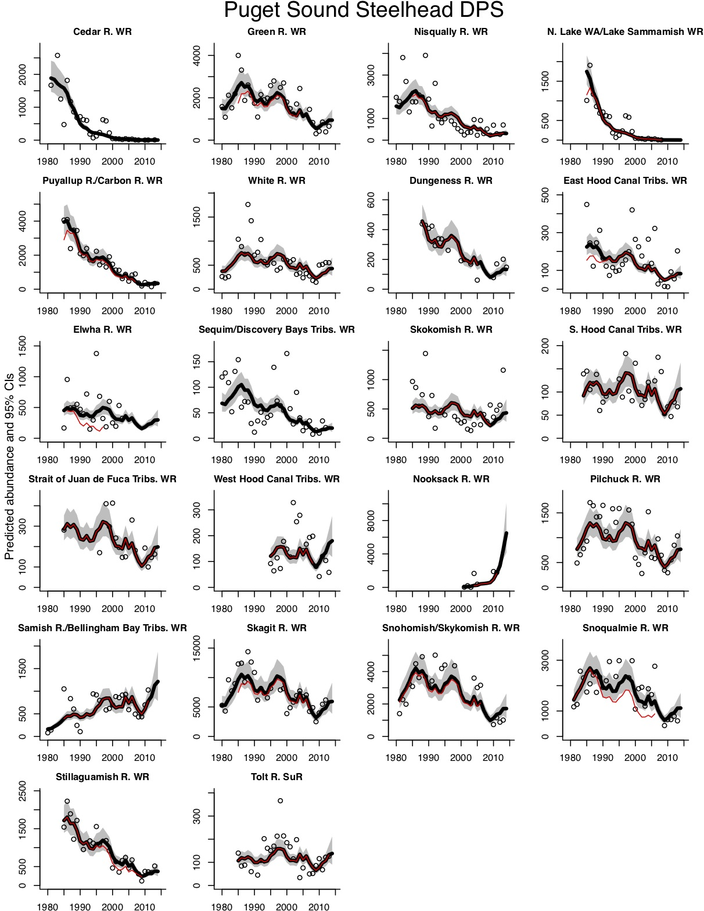

This is runs the standardized trends metrics used in the 2015 and 2020 5-year NWFSC PNW Salmonid Viability Report which support the 5-year Status Reviews prepared by WRO.
Installation
To install, install the devtools package (if needed) and then to install the latest release use:
devtools::install_github("nwfsc-math-bio/NWCTrends@*release")To install an R package from Github, you need to be able to build an R package on your machine. If you are on Windows, that means you may need to install Rtools. On a Mac, installation should work fine; you don’t need to install anything.
The default is to create an html file with the tables and figures. You can also select Word or PDF output. In order to create PDF files and tables, you also need to install tinytex if you do not have a TeX installation. Code to install tinytex is below.
install.packages('tinytex')
tinytex::install_tinytex()Instructions to run a demo
To download a set of demo files, run the following code.
fpath <- system.file("extdata", package="NWCTrends")
file.copy(fpath, ".",recursive=TRUE)This will create a folder called extdata in your directory.
To run a demo analysis and create a report, type
library(NWCTrends)
NWCTrends_report()You will be asked to select a data file. If you do not have data, navigate to one of the .csv or .RData files in the extdata folder.
Here is an example of customizing a variety of features:
NWCTrends::NWCTrends_report(inputfile="Data/CRchum2020.csv",
fit.min.year=1949, fit.max.year = 2025,
plot.min.year=1980, plot.max.year = 2025,
geomean.table.control=list(
min.year=1990, max.year=2025, lenbands=5,
min.band.points=2, change.col="last.two"),
trend.table.control=list(
year.ranges=list(1990:2005,2006:2020,2021:2025)),
output.type = "word",
output.dir = "Output/CRchum"
)Type ?NWCTrends for instructions for analyzing a data set. The data must be .csv file. Figures will be saved in the NWCTrends_output folder, created in your working directory.
Instructions to run your own data
Download the demo data files and duplicate the format (csv or xls). Do not rename the columns. Missing data are entered with a -99. An ESU name and a unique population name (COMMON_POPULATION_NAME) are required. The tables produced by NWCTrends only use the BROOD_YEAR, NUMBER_OF_SPAWNERS, and FRACWILD columns. An entry is required for each year. RUN_TIME, SPECIES and MAJOR_POPULATION_GROUP are used to adding labels to plots and tables. BROOD_YEAR is mislabelled. This is simply the Year of sampling.
Modifying the tables
Optional. Set the years to use for the analysis using fit.min.year and fit.max.year. If you leave this off, it will use the first year in the data set and the last year in the data set.
In the tables for the geometric means, you can control the table by passing in the list geomean.table.control. For example, you can set the beginning and ending years to be shown in the table. These can be different than fit.min.year and fit.max.year.
For example, you may want to fit to 1990 to 2019 data but only show 5-year geometric means for 1999 to 2018. To do this, you would call the report with
NWCTrends_report(fit.min.year=1990, fit.max.year=2019,
geomean.table.control=list(min.year=1999, max.year=2018, change.col="first.last"))The change.col argument determines whether the last column is the percent change between the first and last 5-year bands or between the last two bands.
The code will create bands with 5 years in each band starting with min.year. If max.year, would lead to a final band with less than 5 years, then the last band will not have 5 years. If it has fewer than min.band.points, then the last band will be NA. You will need to properly choose min.year and max.year to get the table to look as you want.
You customize the multi-year trend ranges. To do this, you would call the report with for example the following to show the 1990 to 2019 and 2015 to 2019 ranges.
NWCTrends_report(fit.min.year=1990, fit.max.year=2019,
trend.table.control=list(year.ranges=list(1990:2019, 2015:2019)))References
The 2015 NWFSC PNW Salmonid Viability Report can be assessed via the GitHub repo:
-
Viability Report 2015 (PDF)
https://github.com/nwfsc-math-bio/NWCTrends/raw/master/reports/2015_Status_Review_Update.pdf -
Viability Report 2020 (PDF)
https://github.com/nwfsc-math-bio/NWCTrends/raw/master/reports/2020_Viability_Report.pdf
The version of NWCTrends used for the original report was v1.0.
A standalone PDF of the Methods section is also available:
Example output
A report will be generated with figures and tables. Example report
The main figure shows the estimated trends.

Disclaimer
The United States Department of Commerce (DOC) GitHub project code is provided on an ‘as is’ basis and the user assumes responsibility for its use. DOC has relinquished control of the information and no longer has responsibility to protect the integrity, confidentiality, or availability of the information. Any claims against the Department of Commerce stemming from the use of its GitHub project will be governed by all applicable Federal law. Any reference to specific commercial products, processes, or services by service mark, trademark, manufacturer, or otherwise, does not constitute or imply their endorsement, recommendation or favoring by the Department of Commerce. The Department of Commerce seal and logo, or the seal and logo of a DOC bureau, shall not be used in any manner to imply endorsement of any commercial product or activity by DOC or the United States Government.

U.S. Department of Commerce | National Oceanographic and Atmospheric Administration | NOAA Fisheries